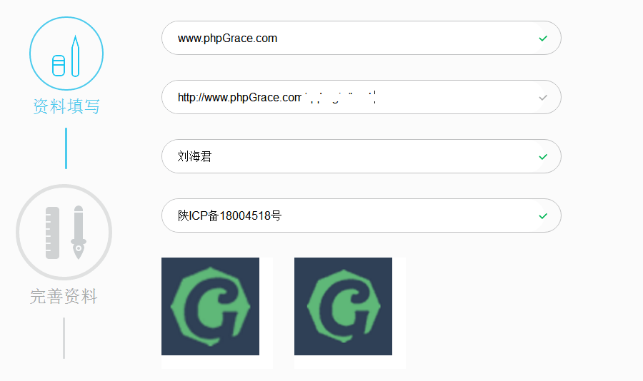

功能描述
网站第三方登录 - qq登录组件，整合为一个类文件，通过简单的配置即可完成复杂的登录功能。
申请开通QQ互联
网址 : https://connect.qq.com
打开网址后登录QQ互联，点击“创建应用按钮”，按照步骤填写并提交应用：

部署说明
下载 webQQLogin.php 部署到 phpGrace/tools 文件夹下。
数据结构
创建 pg_members.sql 数据表。
DROP TABLE IF EXISTS `pg_members`; CREATE TABLE `pg_members` ( `u_id` int(11) NOT NULL AUTO_INCREMENT COMMENT 'ID', `u_username` varchar(50) DEFAULT NULL COMMENT '用户名', `u_openid_qq` varchar(100) DEFAULT NULL COMMENT 'openid-qq', `u_unionid_qq` varchar(100) DEFAULT NULL COMMENT 'unionid-qq', `u_phone` varchar(20) DEFAULT NULL COMMENT '手机号', `u_pwd` varchar(50) DEFAULT NULL COMMENT '密码', `u_name` varchar(20) DEFAULT NULL COMMENT '称呼', `u_face` varchar(200) DEFAULT NULL COMMENT '头像地址', `u_gender` varchar(20) DEFAULT NULL COMMENT '性别', `u_status` tinyint(4) DEFAULT NULL COMMENT '状态', `u_regtime` bigint(13) DEFAULT NULL COMMENT '注册时间', `u_logintime` bigint(13) DEFAULT NULL COMMENT '登陆时间', `u_randnum` varchar(50) DEFAULT NULL COMMENT '随机码', `u_ip` varchar(20) DEFAULT NULL COMMENT '登陆IP', `u_msgcode` varchar(10) DEFAULT NULL COMMENT '短信验证码', PRIMARY KEY (`u_id`), UNIQUE KEY `u_unionid_qq` (`u_unionid_qq`), UNIQUE KEY `u_username` (`u_username`), UNIQUE KEY `u_phone` (`u_phone`) USING BTREE, UNIQUE KEY `u_openid_qq` (`u_openid_qq`) USING BTREE ) ENGINE=InnoDB AUTO_INCREMENT=100000 DEFAULT CHARSET=utf8 ROW_FORMAT=DYNAMIC;
类文件配置
打开 webQQLogin.php 1、正确填写 appId 和 appKey （QQ互联管理中心点开应用获取） 2、填写回调地址 redirectUri，如: http://www.phpGrace.com/qqLogin/bac
登录接口使用【 注意在入口页开启 session 】
在视图中添加一个链接，链接到控制器 qqLogin，代码如下：
<?php
//核心登录 session 名称 graceUid，请根据项目需求自行修改。
class qqLoginController extends grace{
private $qqLoginer;
public function __init(){
parent::__init();
//检查是否已经登录
if(!empty($_SESSION['graceUid'])){header('location:/'); exit;}
//实例化 qq 登录对象
$this->qqLoginer = new phpGrace\tools\webQQLogin();
}
//发起登录
public function index(){
$this->qqLoginer->login();
}
//返回接口
public function back(){
//GET 参数检查、 验证码比对
$res = $this->qqLoginer->checkBack();
if(!$res){exit($this->qqLoginer->error);}
//获取用户信息
$user = $this->qqLoginer->getUserInfo();
//连接数据比对用户
$dbMember = db('members');
$member = $dbMember->where('u_openid_qq = ?', array($this->qqLoginer->openId))->fetch();
//用户数据不存在 [ 第一次登录 ]
if(empty($member)){
$preAddData = array();
$preAddData['u_openid_qq'] = $this->qqLoginer->openId;
$preAddData['u_nickname'] = $user['nickname'];
$preAddData['u_face'] = empty($user['figureurl_qq_2']) ? $user['figureurl_qq_1'] : $user['figureurl_qq_2'];
$preAddData['u_gender'] = $user['gender'];
$preAddData['u_status'] = 1;
$preAddData['u_regtime'] = time();
$preAddData['u_logintime'] = time();
$preAddData['u_ip'] = phpGrace\tools\ip::getIp();
$uid = $dbMember->add($preAddData);
if($uid){
//记录 session
setSession('graceUid', $uid);
setSession('graceNickName', $user['nickname']);
}else{
exit('服务器忙，请返回重试');
}
}
//用户已经存在
else{
$preUpdateData = array();
$preUpdateData['u_logintime'] = time();
$preUpdateData['u_ip'] = phpGrace\tools\ip::getIp();
$dbMember->where('u_id = ?', array($member['u_id']))->update($preUpdateData);
//记录 session
setSession('graceUid', $member['u_id']);
setSession('graceNickName', $user['nickname']);
}
//登录后跳转回首页，可以根据项目需求改写跳转
header('location:/');
}
}
下载当前类库源码： mac 系统环境 可以在编辑器的tools目录下通过 Terminal 执行命令行直接下载到目录里
mac 系统环境 可以在编辑器的tools目录下通过 Terminal 执行命令行直接下载到目录里
curl -O http://liukuaizhuan.gitee.io/phpgracemanual/工具/QQ登录-web版/webQQLogin.php